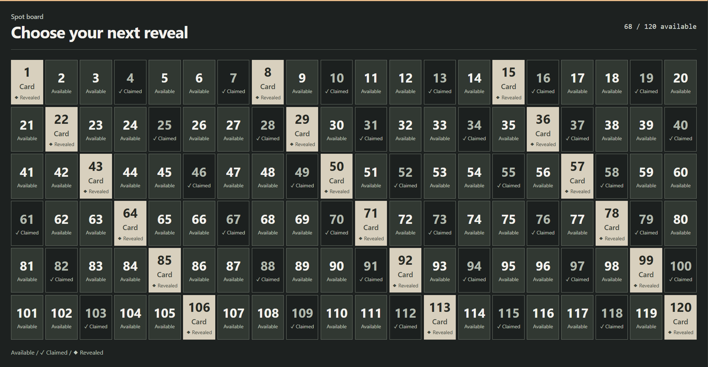
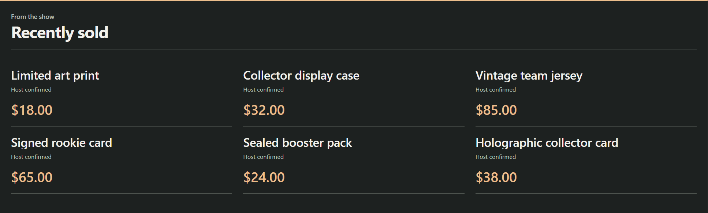

Перегляд ↗
Перегляд ↗Посібники / Торгівля
Торгові оверлеї
Товари, вільні місця й останні продажі. Вибирайте те, що потрібно бачити аудиторії.
Виберіть відображення
Ці приклади перегляду використовують демонстраційні дані.
Перегляд ↗
Перегляд ↗02 / Дошка розкриття
Дошка пронумерованих місць
Пронумерована дошка до 20 × 6. Позначте зайняте місце, а потім розкрийте призначений йому предмет.
Налаштувати → Перегляд ↗
Перегляд ↗03 / Командні брейки
Дошка команд
Надайте кожній команді плитку. Закривайте місце, коли його займають.
Налаштувати →
Перегляд ↗04 / Останні продажі
Останні продажі
Показуйте останні покупки списком, стіною або компактною смугою. Додавайте ціну, коли вона відома.
Налаштувати →Три кроки
Підключіть до OBS
- Виберіть відображенняВідкрити Монетизація у спливному вікні SSN. Додайте товар, підключіть магазин або відкрийте Дошки місць і останні продажі.
- Збережіть, а потім скопіюйте посиланняВикористовуйте Зберегти налаштування для постачальників. Елементи керування дошкою зберігаються одразу. Скопіюйте посилання OBS для відображення.
- Додайте браузерне джерело OBSВставте посилання. Почніть із 800 × 600 для картки товару або 1920 × 1080 для дошки. Залишайте SSN запущеним.
У стрім потрапляє лише екран показу. Керуйте ним у SSN; Док керування OBS необов’язковий.
Товари та посилання підтримки
Товари та посилання для підтримки
- Додайте публічне посилання, назву та необов’язкове зображення або ціну.
- Виберіть Магазин, Подарунок, Підтримка або Приєднатися, а потім збережіть.
- Використовуйте Показати / Далі / Приховати / Відновити для керування вітриною.
Посилання на товар рекламує його. Для сповіщень про покупки підключіть магазин окремо.
QR-коди, ротація й параметри відображення
Збережіть до 20 публічних посилань. Закріпіть одне або чергуйте їх; кожне залишається видимим щонайменше 15 секунд. Також діліться публічним посиланням у чаті для глядачів із телефона.
Виберіть Showcase, Support card або Activity alerts для окремих джерел OBS. Компактний стиль, масштаб, кут і показ за часом доступні в Overlay link options. Ціни, введені вручну, є знімками; покупки не прибирають додані вручну товари.

Підключайте те, чим користуєтеся
Підключення магазинів і платежів
Shopify та магазини авторів
Імпортуйте товари й підключайте сповіщення про покупки.
Посібник із Shopify →Fourthwall та інші магазини →
Продавець eBay
Підключіть обліковий запис продавця, додайте свої оголошення й показуйте товари або сповіщення про оплачені покупки.
Перегляд →Чим відрізняються продажі й аукціони
Лише оплачені замовлення підключеного продавця можуть створювати сповіщення про покупки. Ставка, завершення аукціону чи зміна залишку не доводять оплату. Ціни оновлюються приблизно раз на хвилину.
Перша покупка прибирає вибране оголошення з ротації вітрини. Наступні покупки все одно викликають сповіщення. Особа покупця не надається; повернення коштів не відкриває записи знову. Підключення продавця потребує доступності сервісу SSN eBay.
Подарунки Throne
Введіть своє ім’я користувача, збережіть, а потім вставте URL вебхука SSN у Throne.
Перегляд →Ранги подарунків і внески
Повністю оплачені подарунки підвищують ваш ранг. Внески показують сповіщення; ранг зростає, коли подарунок повністю профінансовано. SSN не вгадує, який предмет зі списку бажань купили.
Залишайте SSN підключеним. Ранг локальний для цього встановлення; повернення коштів і скасування не зменшують його. Анонімні подарунки залишаються анонімними.
Налаштування вебхука ThroneСписок бажань Amazon
Завантажте публічний список бажань. Самі підтверджуйте покупки, щоб просуватися сходинками від найдешевшого.
Перегляд →Імпорт і підтвердження
Перевірте імпортовані ціни й відсутні товари; використовуйте ручне введення, якщо імпорт не вдався. Видалення товару з Amazon не доводить покупку. Використовуйте одну валюту на сходинки.
Перевіривши покупку, виберіть Підтвердити придбання поточного предмета (Confirm current item bought). Скасування охоплює останнє підтвердження протягом поточного запуску SSN. Перевірте налаштування публічного доступу й адреси у списку бажань.
Чайові NinjaBacker
Підключіть Stripe у NinjaBacker. Введіть своє ім’я користувача й приватний Tip ID у SSN.
Перегляд →Жива стрічка чи надійний вебхук?
Жива стрічка — найпростіше налаштування. Надійний вебхук ставить підписані чайові в чергу на строк до семи днів, зокрема коли SSN вимкнено. Дотримуйтеся підказок налаштування та надішліть тестові чайові з панелі керування.
Приватний Tip ID не потрапляє до URL оверлеїв. Анонімні чайові залишаються анонімними. Повернення коштів не скасовує сповіщень або нагород.
Посібник із доставки NinjaBackerПросте посилання для підтримки
Використовуйте картку підтримки з будь-яким публічним посиланням для чайових, подарунків або членства.
Перегляд →Щоб показати посилання, підключення облікового запису не потрібне. Сповіщенням про оплату потрібне підтримуване підключення.
Сповіщення про покупки й автоматизація
Відзначте покупку
Додайте продажу власний звук або зображення.
Ефекти сповіщень →Надрукуйте подяку
Використовуйте доступні відомості про товар на етикетці в застосунку Windows.
Посібник із принтера →Автоматизуйте наступний крок
Зіставте постачальника й подію в Event Flow.
Event Flow →Відомості про події та доставку
Використовуйте Event Type для purchase, gift, giftcontribution або giftfunded. Збіги донатів hasDonation. Завершений краудфандинг — це досягнення цілі, а не ще один платіж. Ручні зміни дошки/продажів ніколи не запускають нагород за покупки.
Почніть з одного звукового шляху для кожної події. Оголошення вмикаються за бажанням. Shopify та eBay не надають особи покупця; натомість друкуйте відомості про товар. Зворотний зв’язок доставки не доводить видимість в OBS, друк на папері чи виконання замовлення. Зворотний зв’язок керування.